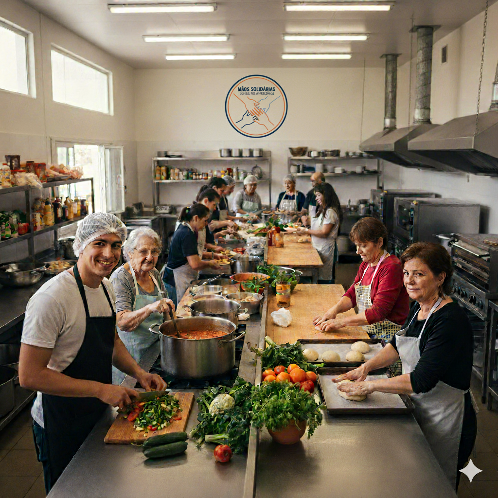

Seja um Voluntário Solidário
Ação Contínua
Urgente
O voluntariado é a força vital da nossa organização. Venha dedicar seu tempo e talento para quem mais precisa.
Onde Ajudar:
- Distribuição de alimentos .
- Apoio escolar para crianças.
- Mutirões de reforma e limpeza.
